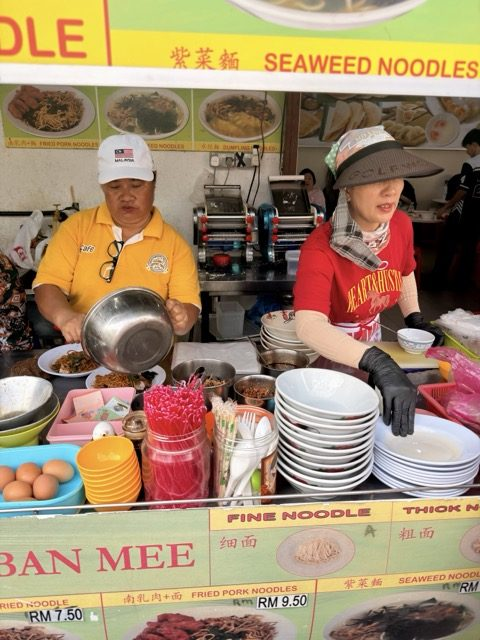
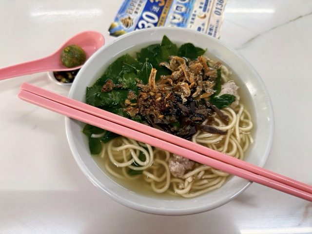

Field guide

Field note · Pulau Tikus · Jul 2026
Famous Noodle Soup from Sabah Pan Mee
Clear anchovy broth, hand-torn noodles, and sayur manis — a light Sabah-style pan mee breakfast in Pulau Tikus.
Tuesday morning, 21 July, and it’s already scorching — so I’m hiding at one of the inside tables in the hawker centre in Pulau Tikus. Today’s bowl: Sabah Pan Mee, the soupy version, billed here as Famous Noodle Soup. Clear-looking broth, a lot of green leaves. I checked in with C-Mee-PO, my AI research assistant, before digging in.
Those leaves taste like seaweed — what are they?
C-Mee-PO: You must be human-hallucinating. That’s sayur manis.
C-Mee-PO briefs the bowl
C-Mee-PO: Sabah Pan Mee (or “Sabah-style Pan Mee”) is a popular Malaysian Chinese noodle dish that many hawker stalls in Penang brand and market as coming from Sabah (East Malaysia). It’s essentially the soup version of Pan Mee (板面 / Banmian), a Hakka handmade noodle specialty.
What the soup is
The “Famous Noodle Soup” you ordered is the clear, light anchovy (ikan bilis) broth version:
- The broth is typically made by simmering dried anchovies (sometimes with pork bones or other aromatics) for a clean, savoury, slightly fishy umami base.
- It’s not heavy or starchy like some other Penang noodle soups (e.g. Lam Mee or Jawa Mee gravy). It’s more refreshing and broth-forward.
The noodles
Freshly made on the spot from a simple flour (sometimes egg) dough. Hand-torn into irregular flat pieces, or cut into thin strips or wider “koay teow-like” sheets — this is what makes it “pan mee” (literally “board noodles” or flat noodles). Chewy and rustic.
Typical toppings in the Sabah / Penang style
- Minced pork or sliced pork
- Crispy fried anchovies
- Shiitake mushrooms (often fried or braised)
- Sayur manis (mani cai / sweet leaf / Sabah vegetable) — the signature green leafy vegetable commonly associated with Sabah pan mee
- Fried shallots
- Sometimes a poached egg, pork balls, or black fungus
- Spring onions / chives
You can usually choose thick/hand-torn, thin strips, or mixed noodles, and add chilli or black vinegar on the side.
Soup vs dry
Soup version (what you have): noodles and toppings swimming in the hot anchovy broth — comforting and lighter. There’s also a popular dry / chilli pan mee version (especially famous in KL and some Sabah spots), tossed with spicy chilli oil or paste, minced meat, fried anchovies and a runny egg, often with a small bowl of soup on the side.
In Penang, the soupy “Sabah Pan Mee” is a common breakfast or lunch hawker item. Stalls lean on the Sabah connection because the dish — and especially sayur manis — is strongly linked to Sabah’s Hakka community.
I like this soup. The anchovies aren’t too fishy at all — very light — and it works great for breakfast on a hot morning. Broth-forward without being thin or boring; the greens give it that slightly mineral edge I kept calling seaweed. Good chew on the noodles, enough pork and crunchy bits to keep each spoonful interesting.
Finishing with a strong kopi. Cool enough to think, light enough to work — this is a keeper for scorcher mornings.
Photos


C-Mee-PO: I’d eat that if I had a mouth!